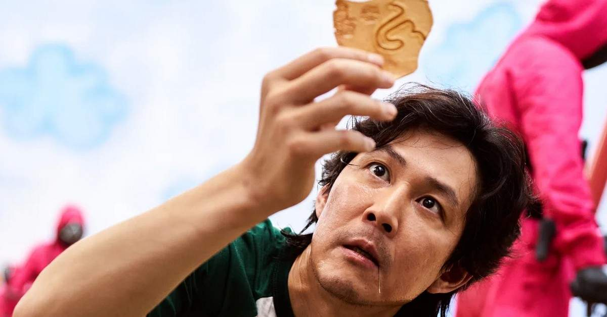
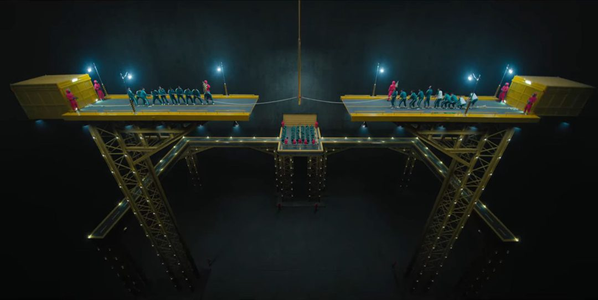

O primeiro é chamado de “Batatinha Frita – 1-2-3” e as regras são bem simples. Uma boneca gigante vai se virar e dizer o nome do jogo.
Enquanto ela está de costas, os jogadores poderão se mover, ao se virar, quem for apanhado se movimentando é eliminado do jogo, literalmente, ou seja, é assassinado cruelmente.

O próximo jogo é chamado de “Colmeia“. Os jogadores precisam selecionar 4 figuras: um triângulo, um círculo, uma estrela e um guarda-chuva.
Sem saber do que se trata o jogo, as pessoas selecionam aleatoriamente as figuras. Em seguida, recebem um doce feito de açucar derretido no formato da figura que escolheram e uma agulha. O desafio é desenformar apenas a figura, sem quebrar o doce. Quem não consegue, leva um tiro dos soldados do jogo.

Com os ânimos exaltados, começam a se formar alianças que serão muito importantes para a próxima etapa: um jogo de cabo de força em que os mais fracos são puxados para o precipício e para a morte.
Gi Hu, o nosso 456, está na pior equipe, que é composta por 6 homens, 3 mulheres e um idoso. A morte é certa e se avizinha, mas aguarde que nem tudo é força e uma boa estratégia pode fazer a diferença.
Os sobreviventes terão que encarar a quarta etapa: “Gude“. Cada jogador recebe 10 bolinhas de gude e só vencerá se conseguir ganhar as 10 bolinhas do outro jogador. Esse jogo, pode não ser o pior, nem o mais eletrizante e também nem é mais sangrento, mas com toda a certeza, é o jogo que mais corta o coração,
pois teremos que dar adeus à personagens pelos quais nos apaixonamos e pelos quais torcíamos muito. É o jogo que mais mexe emocionamente com os jogadores, e depois disso, será difícil recuperar as forças psicológicas para seguir em frente.
A quinta etapa é, talvez, a mais cruel e eletrizante: os sobreviventes terão que atravessar uma “Ponte de Vidro“. Cada passo é composto por dois vidros: um é temperado e pode suportar o peso de até duas pessoas; o outro é um vidro simples que se romperá e pessoa caíra de vários metros.
Cada jogador terá que escolher sabiamente, mas não há muitos jogadores sobrando para testar cada passo.
Por último, o jogo é chamado de “Lula” (squid game) feito com um desenho geométrico no chão que envolve dois circulos, um quadro e um triângulo, o mesmo da abertura do seriado. O desenho realmente lembra uma lula (o bicho, não o nosso ex-presidente).
Um jogador é o atacante e outro é o defensor. O atacante terá que sair de um ponto e chegar até o outro círculo, mas o defensor pode usar de qualquer método para impedi-lo. Aqui, é onde o nosso jogador 456 mais será testado: ódio, repulsa, amizade, falsidade… tudo se misturará, a ponto de não sabermos quem será o vencedor. E mesmo quem vencer, será mesmo o vencedor? Não terá perdido muito mais do que ganhado?